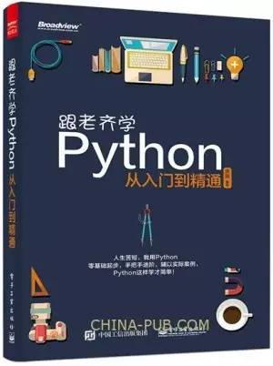
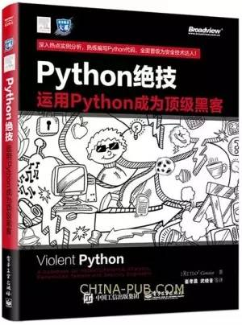
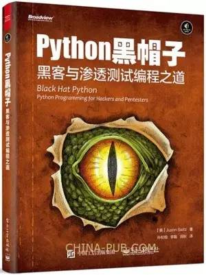
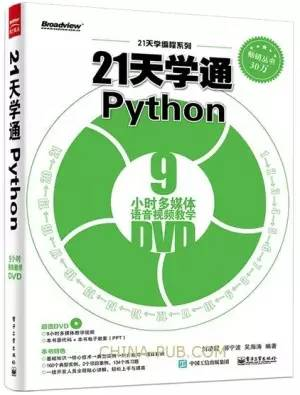
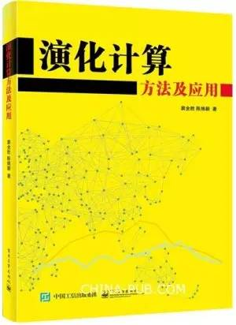
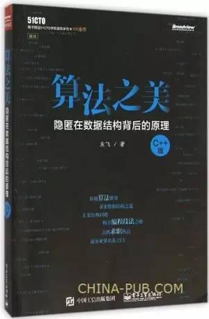
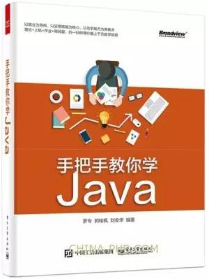
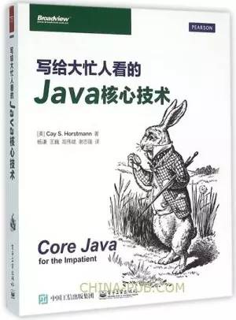

01.跟老齐学Python：从入门到精通

《跟老齐学Python：从入门到精通》是面向编程零基础读者的Python入门教程，内容涵盖了Python的基础知识和初步应用。以比较轻快的风格，向零基础的学习者介绍一门时下比较流行、并且用途比较广泛的编程语言，所以，《跟老齐学Python：从入门到精通》读起来不晦涩，并且在其中穿插了很多貌似与Python编程无关，但与学习者未来程序员职业生涯有关的内容。
《跟老齐学Python：从入门到精通》特别强调了学习和使用Python的基本方法，学习一种高级语言，掌握其各种规则是必要的，但学会"自省"方法更重要，这也是《跟老齐学Python：从入门到精通》所试图达到的"授人以鱼不如授人以渔"的目的。
《跟老齐学Python：从入门到精通》是面向初学者的读物，不是为开发者提供的开发手册，所以，它不是"又适用于中高级读者"的读物。
跟老齐学Python：从入门到精通
作者： 齐伟 ┃2016.03

02.Python绝技：运用Python成为顶级黑客

Python 是一门常用的编程语言，它不仅上手容易，而且还拥有丰富的支持库。对经常需要针对自己所 处的特定场景编写专用工具的黑客、计算机犯罪调查人员、渗透测试师和安全工程师来说，Python 的这些 特点可以帮助他们又快又好地完成这一任务，以极少的代码量实现所需的功能。
《Python绝技：运用Python成为顶级黑客》结合具体的场景和真 实的案例，详述了 Python 在渗透测试、电子取证、网络流量分析、无线安全、网站中信息的自动抓取、 病毒免杀等领域内所发挥的巨大作用。
《Python绝技：运用Python成为顶级黑客》适合计算机安全管理人员、计算机犯罪调查和电子取证人员、渗透测试人员，以及所有对计算机 安全感兴趣的爱好者阅读。同时也可供计算机、信息安全及相关专业的本/专科院校师生学习参考。
Python绝技：运用Python成为顶级黑客
作者： （美）TJ O''Connor ┃2016.01
03.Python 黑帽子：黑客与渗透测试编程之道

《Python 黑帽子：黑客与渗透测试编程之道》是畅销书《Python 灰帽子-黑客与逆向工程师的Python 编程之道》的姊妹篇，那本书一面市便占据计算机安全类书籍的头把交椅。《Python 黑帽子：黑客与渗透测试编程之道》由Immunity 公司的高级安全研究员Justin Seitz 精心撰写。作者根据自己在安全界，特别是渗透测试领域的几十年经验，向读者介绍了Python 如何被用在黑客和渗透测试的各个领域，从基本的网络扫描到数据包捕获，从Web 爬虫到编写Burp 扩展工具，从编写木马到权限提升等。
作者在《Python 黑帽子：黑客与渗透测试编程之道》中的很多实例都非常具有创新和启发意义，如HTTP 数据中的图片检测、基于GitHub命令进行控制的模块化木马、浏览器的中间人攻击技术、利用COM 组件自动化技术窃取数据、通过进程监视和代码插入实现权限提升、通过向虚拟机内存快照中插入shellcode 实现木马驻留和权限提升等。通过对这些技术的学习，读者不仅能掌握各种Python 库的应用和编程技术，还能拓宽视野，培养和锻炼自己的黑客思维。读者在阅读《Python 黑帽子：黑客与渗透测试编程之道》时也完全感觉不到其他一些技术书籍常见的枯燥和乏味。
《Python 黑帽子：黑客与渗透测试编程之道》适合有一定编程基础的安全爱好者、计算机从业人员阅读，特别是对正在学习计算机安全专业，立志从事计算机安全行业，成为渗透测试人员的人来说，这本书更是不可多得的参考。
Python 黑帽子：黑客与渗透测试编程之道
作者： (美)Justin Seitz ┃2015.08
04.21天学通Python

《21天学通Python》全面、系统、深入地讲解了Python编程基础语法与高级应用。在讲解过程中，通过大量实际操作的实例将Python语言知识全面、系统、深入地呈现给读者。此外，作者专门为本书录制了大量的配套教学视频，让读者通过分析实例、运行实例尽快熟悉Python编程，在学习中遇到问题时，也可以作为参考。
《21天学通Python》共分三篇。第一篇介绍Python语言的特点、安装、语法基础、程序流程控制、面向过程的编程方法、面向对象的编程方法、程序异常的处理；第二篇介绍了Python语言中的包与模块、迭代器、生成器、装饰器、上下文管理器等进阶语法，同时介绍了使用Python标准库中的文件系统处理、图形化界面编程、正则表达式、网络编程、多进（线）程编程、数据库编程。此外，还介绍了运用第三方库的Web网站编程、图片处理；第三篇通过两个案例介绍Python的综合编程技术。
《21天学通Python》在内容上涉及面广，从基本操作到高级技术及综合案例，涉及Python语言的基础语法和编程特性。《21天学通Python》在设计上浅显易懂、实例丰富，尤其适合广大编程初学者自学，也适合对Python语言感兴趣的爱好者作为参考用书。
21天学通Python
作者： 刘凌霞 郝宁波 吴海涛┃2016.01
01.演化计算方法及应用

本书全面概括了用演化方法求解优化问题的一些新方法，重点介绍了进化规划、粒子群优化、微分演化、文化算法和蚁群算法，并阐述了几种新的改进算法，例如，群体启发进化规划方法、模拟退火粒子群优化算法及有分工策略的粒子群优化等，同时就所涉及的算法进行了系统的实验和比较，讨论了不同算法对不同环境的适应能力。 本书可作为从事群体智能、演化计算等领域的研究人员的参考书，对于解决优化问题有一定的参考和应用价值。
演化计算方法及应用
作者： 刘凌霞 郝宁波 吴海涛┃2016.01
02.算法之美——隐匿在数据结构背后的原理（C++版）

《算法之美(隐匿在数据结构背后的原 理C++版)》围绕算法与数据结构这个话题，循序渐进 、深入浅出地介绍了现代计算机技术中常用的40 余 个经典算法，以及回溯法、分治法、贪婪法和动态规 划等算法设计思想。在此过程中，本书也系统地讲解 了链表（包括单向链表、单向循环链表和双向循环链 表）、栈、队列（包括普通队列和优先级队列）、树 （包括二叉树、哈夫曼树、堆、红黑树、AVL 树和字 典树）、图、集合（包括不相交集）与字典等常用数 据结构。同时，通过对22 个经典问题（包括约瑟夫 环问题、汉诺塔问题、八皇后问题和骑士周游问题等 ）的讲解，逐步揭开隐匿在数据结构背后的算法原理 ，力图帮助读者夯实知识储备，激活思维技巧，并最 终冲破阻碍编程能力提升的重重藩篱。
本书适合作为大专院校相关专业学生研习算法与 数据结构知识的课外参考书。对有意参加信息学竞赛 的读者，本书亦有很强的参考价值。此外，鉴于算法 与数据结构在求职过程中常常被视为考察重点，所以 就临近毕业的学生或其他欲从事IT 行业的求职者而 言，阅读本书也将对面试备考大有裨益。
算法之美——隐匿在数据结构背后的原理（C++版）
作者： 左飞 ┃2016.03
03.手把手教你学Java

《手把手教你学Java》从初学者的角度详细讲解了Java开发中重点用到的多种技术。《手把手教你学Java》共13章，包括开发Java项目的基本框架、运行机制和原理、基本语法、运算符、多种条件结构、循环、String和StringBuffer、类和方法、数组等，并采用典型例子、使用通俗易懂的语言阐述面向对象中的抽象概念、继承、封装、多态、异常、面向对象编程、面向接口编程。通过剖析案例、分析代码结构含义、解决常见问题等方式，帮助初学者养成良好的编程习惯。《手把手教你学Java》分为理论、上机、作业、简答题4个部分，并且在每章的开头对本章所有的单词进行总结，全书附有配套视频。
《手把手教你学Java》既可作为高等院校本、专科计算机相关专业的程序设计课程教材，也可作为Java技术基础的培训教材，是一本适合广大计算机编程初学者的入门级教材。
手把手教你学Java
作者： 罗专 郭桂枫 刘安华 ┃2016.02
04.写给大忙人看的Java核心技术

√ 经典名著Core Java作者力作，面向Java 8新特性的浓缩精华
√ 涵盖lambda、Stream及并发编程增强、时间日期API及使用脚本语言
√ for the Impatient系列文风轻松，有趣易懂，富含生动的可实际运行的源代码
√ 加入对Java 8新特性深刻理解，适合各阶层读者上手、巩固和提高编程技能
写给大忙人看的Java核心技术
作者： （美）Cay S. Horstmann ┃2016.01
点击阅读原文，进入书店，海量图书任你挑选

点击阅读原文，进入书店，海量图书任你挑选，微信购书，首单立减5元#互动书城#
![]()